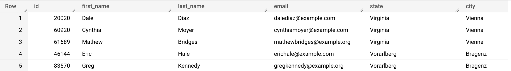
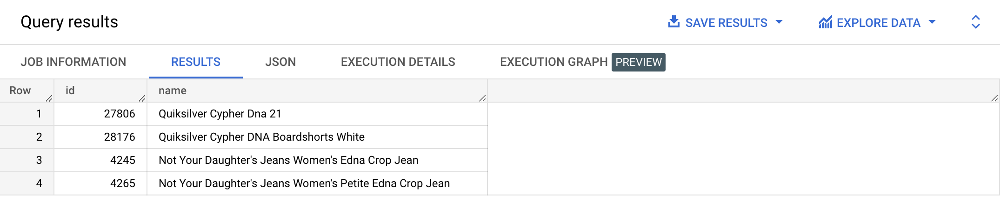

We can also use the OR keyword to combine multiple conditions in the WHERE clause. We use the OR keyword to specify conditions where AT LEAST ONE needs to be true
SELECT id, first_name, last_name, email, state, city, country
FROM bigquery-public-data.thelook_ecommerce.users
WHERE country = 'Austria' OR city = 'Vienna'
LIMIT 10;

{% include practice_problems_intructions.html %}bigquery-public-data.thelook_ecommerce.products
Write a query that displays all products that contain ‘dna’ in their name, regardless of the case.

SELECT id,
name
FROM bigquery-public-data.thelook_ecommerce.products
WHERE name LIKE '%dna%'
OR name LIKE '%Dna%'
OR name LIKE '%DNa%'
OR name LIKE '%DNA%'
OR name LIKE '%dNa%'
OR name LIKE '%dNA%'
OR name LIKE '%dnA%'
OR name LIKE '%DnA%';